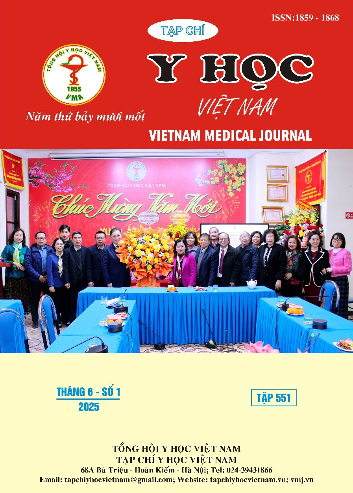
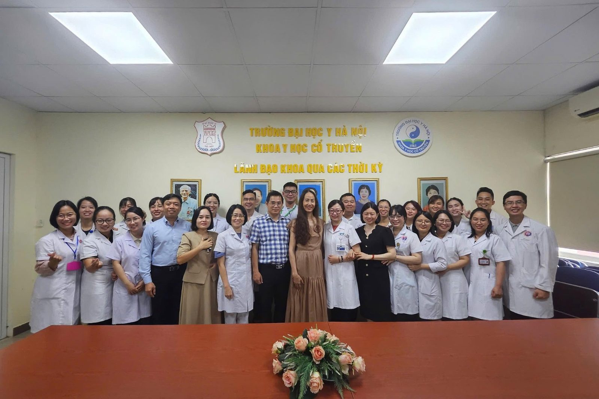

Có một câu hỏi mình được hỏi khá nhiều trong quá trình làm nghề: "Y học cổ truyền có còn phù hợp trong thời đại y học hiện đại phát triển mạnh như hiện nay không?"
# Y học cổ truyền đang thay đổi như thế nào?
Càng làm việc, càng tham gia nghiên cứu và đi hỗ trợ chuyên môn tại các cơ sở y tế tuyến dưới, mình càng nhận ra rằng câu trả lời không nằm ở việc Y học cổ truyền có tồn tại hay không, mà nằm ở việc Y học cổ truyền đang thay đổi như thế nào để phù hợp với nhu cầu chăm sóc sức khỏe hiện nay.
Từ những bệnh nhân mình trực tiếp điều trị, mình thấy có ít nhất 5 xu hướng đang diễn ra rất rõ.
Từ kinh nghiệm sang bằng chứng khoa học
Trước đây, nhiều người cho rằng Y học cổ truyền chủ yếu dựa trên kinh nghiệm. Tuy nhiên, những năm gần đây, các phương pháp điều trị ngày càng được đánh giá bằng nghiên cứu khoa học cụ thể.
Ví dụ trong nghiên cứu của mình trên bệnh nhân sau phẫu thuật trĩ, điện châm kết hợp Bột ngâm trĩ giúp giảm đau tốt hơn so với nhóm điều trị thông thường, với tỷ lệ kết quả tốt đạt 86,7% so với 63,3%. Đây cũng là nội dung chính của luận án thạc sĩ mà mình thực hiện, và kết quả nghiên cứu đã được đăng tải trên Tạp chí Y học Việt Nam, góp phần cung cấp thêm bằng chứng khoa học cho việc ứng dụng điện châm trong hỗ trợ điều trị sau phẫu thuật trĩ.

Tương tự, trong lĩnh vực chấn thương chỉnh hình, ngày càng có nhiều nghiên cứu cho thấy một số dược liệu có khả năng tác động lên quá trình tái tạo xương và điều hòa phản ứng viêm. Điều này giúp giải thích vì sao các bài thuốc hoạt huyết hay bổ can thận đã được sử dụng từ lâu trong điều trị gãy xương.
Theo mình, đây là xu hướng quan trọng nhất. Một phương pháp muốn phát triển bền vững phải chứng minh được hiệu quả bằng số liệu, chứ không chỉ bằng kinh nghiệm truyền miệng.
Y học tích hợp trở thành xu hướng tất yếu
Trong thực hành lâm sàng, mình rất hiếm khi thấy một bệnh nhân chỉ cần Y học cổ truyền hoặc chỉ cần Y học hiện đại.
Bệnh nhân sỏi tiết niệu là một ví dụ điển hình. Y học hiện đại giúp tán sỏi nhanh chóng và chính xác. Nhưng sau khi tán sỏi, người bệnh vẫn có thể còn các mảnh sỏi vụn, tiểu buốt hoặc khó chịu kéo dài. Khi đó, việc phối hợp thêm các bài thuốc như Tam kim bài thạch thang có thể hỗ trợ đào thải sỏi và cải thiện triệu chứng.
Hay với bệnh nhân gãy xương, các kỹ thuật kết hợp xương hoặc cố định xương của Y học hiện đại đóng vai trò quyết định. Tuy nhiên, sau đó Y học cổ truyền có thể tham gia vào quá trình giảm đau, giảm sưng nề, hỗ trợ phục hồi chức năng và tạo điều kiện thuận lợi cho quá trình liền xương.
Những trường hợp này giúp mình nhận ra rằng tương lai không phải là sự lựa chọn giữa Y học hiện đại và Y học cổ truyền, mà là sự kết hợp hài hòa giữa hai nền y học nhằm mang lại hiệu quả tốt nhất cho người bệnh.
## Chuẩn hóa để có thể nhân rộng
Một kỹ thuật tốt sẽ không có nhiều ý nghĩa nếu chỉ thực hiện được ở một vài bệnh viện lớn.
Trong thời gian tham gia các chương trình đào tạo và chuyển giao kỹ thuật cho các trung tâm y tế, trạm y tế xã, phường của Hà Nội, mình nhận thấy xu hướng chuẩn hóa đang diễn ra rất mạnh.
Những kỹ thuật như điện châm, xoa bóp bấm huyệt, giác hơi hay các phác đồ điều trị bằng thuốc cổ truyền ngày càng được xây dựng quy trình rõ ràng. Điều này giúp cán bộ y tế tuyến cơ sở có thể áp dụng an toàn và thống nhất.
Đó cũng là lý do hiện nay nhiều người dân có thể tiếp cận các dịch vụ Y học cổ truyền ngay tại địa phương thay vì phải lên tuyến trên.
Số hóa và hiện đại hóa Y học cổ truyền
Một điều thú vị là Y học cổ truyền ngày nay không còn gắn với hình ảnh ghi chép thủ công như nhiều người vẫn nghĩ.
Nhiều cơ sở y tế đã sử dụng hồ sơ bệnh án điện tử, phần mềm quản lý bài thuốc, cơ sở dữ liệu dược liệu và các công cụ hỗ trợ nghiên cứu.
Việc số hóa giúp dữ liệu điều trị được lưu trữ tốt hơn, tạo điều kiện cho các nghiên cứu lớn và góp phần nâng cao chất lượng chuyên môn.
Theo mình, đây sẽ là một trong những động lực quan trọng giúp Y học cổ truyền phát triển trong những năm tới.
## Hướng tới chăm sóc sức khỏe toàn diện
Nếu trước đây Y học cổ truyền thường được nhắc đến khi người bệnh đã mắc bệnh, thì hiện nay vai trò phòng bệnh và nâng cao sức khỏe ngày càng được chú ý.
Người cao tuổi cần phục hồi chức năng, người lao động mắc bệnh cơ xương khớp mạn tính, bệnh nhân sau phẫu thuật hay những người muốn duy trì sức khỏe lâu dài đều có thể hưởng lợi từ các phương pháp điều trị và chăm sóc của Y học cổ truyền.
Đây cũng là định hướng được nhắc đến nhiều trong các chiến lược phát triển ngành y tế giai đoạn hiện nay, khi mục tiêu không chỉ là điều trị bệnh mà còn là chăm sóc sức khỏe cộng đồng.
Điều mình nhìn thấy từ thực tế
Nhìn lại những bệnh nhân sau tán sỏi, sau phẫu thuật trĩ hay sau gãy xương mà mình đã đồng hành, mình nhận ra rằng giá trị của Y học cổ truyền không nằm ở việc thay thế Y học hiện đại.
Giá trị thực sự nằm ở khả năng phối hợp, hỗ trợ và bổ sung cho những gì Y học hiện đại đang làm tốt.
Và có lẽ, tương lai của Y học cổ truyền sẽ không được quyết định bởi những bài thuốc đã tồn tại bao nhiêu năm, mà bởi việc chúng ta có thể chứng minh hiệu quả bằng khoa học, chuẩn hóa bằng quy trình và mang lại lợi ích thực sự cho người bệnh hay không.
